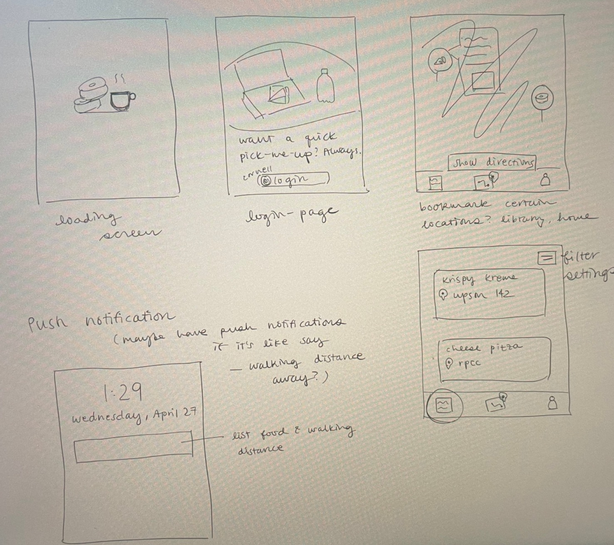

Freetery
Who: Designer (me), one frontend and two backend engineers
Role: UX/UI Design, User Research, Visual Design, Prototyping
Timeline: 48 hours
Project Prompt: App catered to Cornell students
Let me set the scene. You are a college student and want to be tuned in to the free food listserv for a quick snack on the way to class. You join the Free Food GroupMe group and get bombarded with free foods in different areas of campus. You begin to realize that you are not using it as frequently than you imagined. Why is this the case?
GroupMe is a great app that has no restrictions on the number of members in a group. It also has flexibility of being able to send group texts using the carrier’s SMS. However, it can be difficult to gauge when the comment was posted and how much free food is left, if at all. I began to wonder if there was a better platform to emphasize those features in a new app.

This brings us to the People Problem. When I receive free food notifications on Cornell campus, I want to pick up a snack on the way to a class, but I can’t do that well because…
- There are too many posts and the posts are disorganized
- I do not know how much food is left since the post was made
- Too many comments and questions following the post makes the initial post buried and difficult to continuously scroll up
My hypothesis was that if there was an app that emphasized time and location for different posts, it would encourage users to participate more often in free food events and plan their schedule around it.
User research consists of two core activities: observation and interviews. Due to the time restraint of this hackathon challenge, I decided to focus on secondary research on students’ interaction on the Free Food GroupMe chat in order to better understand their desires, challenges, and why the current solution is not working well. I wanted to delve deeper into the motivation behind joining the Free Food GroupMe and why there was a disconnect between joining the group and why people do not stop by and pick up the food at the event.
Some of the key insights that I found were that:
- People want to pick up the free food but find it too difficult to coordinate well with all the different buildings they have to go to
- People are afraid that by the time they go to the free food, it will already be gone and it would be irritating because of the wasted time
How might we better organize the free food uploads so that it is easy for users to find? How might we utilize location and time so that it coordinates well with a student’s schedule?
How did I get here?
My initial concept stems from combining a student’s calendar and the location of the free food posts and it will show the path with the shortest route with the free food posts along the way. It will take into account the timing of when the post was made as well as the relative location of all the buildings that the classes are in. It will have the option of showing all the free food options as well as the ones that are closest to proximity to my schedule. After discussing with backend, it will require both Google Maps api and Google Calendar api and the complexity is not reasonable within the time span of the hackathon challenge. I decided to scratch this idea and pursued a social media inspired app layout. It will have posts that contain photos of the food, the time it was posted, a status bar that shows how much food is left, and a time of when the post was updated.
Rather than implementing a built in calendar, displaying all the food options is a better solution because of the unpredictability of new events or office hours that may pop up. Furthermore, it provides more flexibility to the user if they have preferences for certain types of food or have dietary restrictions. Revising from my first idea, this will still include map display of the free food locations. From my user research, this still fits with the People Problem since it will visually show all the current free food options on the map.
Revising from my first idea, I came up with social media app style where each post is a new free food upload. I met with my team and I presented and explained my thought-process for my low-fidelity diagram. From the people problem, this app must prioritize a filter feature (based on time, location, and allergens), the time when it was posted, and a status bar that indicates the amount of food remaining.
This is what my low-fidelity diagram looked like:
One feature that I initially wanted to include was having other people be able to change the status bar so that it does not bind the person who posted the free food to stay at that location until all the food is gone. However, after speaking with backend, this may present security issues if people decide to take the rest of the leftover food. I agreed on their point, so I changed to including a time update feature where the post will indicate ‘x minutes ago’. This will ensure that there is good updated “communication” between the person who posted and people who want the food. It will also not bind the person to stay there especially if there is a small portion left.
Taking inspiration from apps like Yelp, YouTube, and Headspace, I pursued a visual design that focused on simplicity and event features and created a final prototype below.